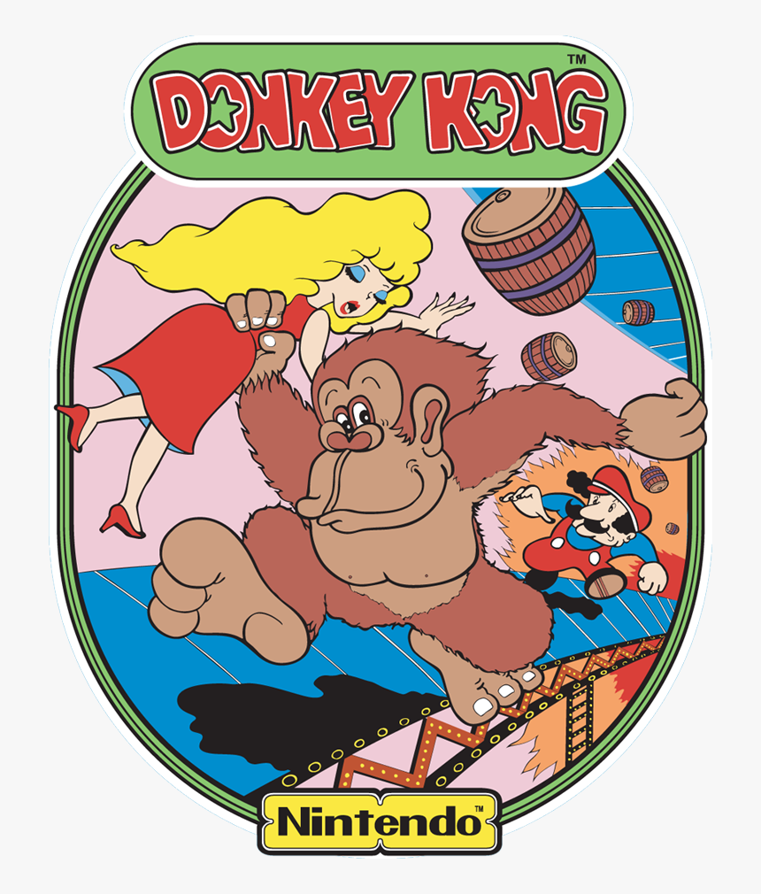
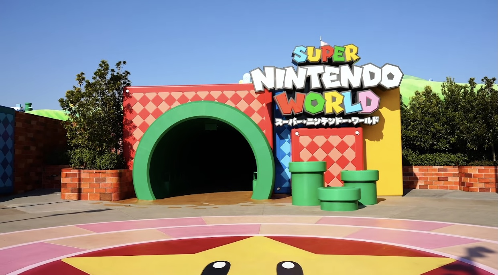

Historia de Mario
Regresar
En 1981, Nintendo necesitaba desesperadamente un éxito en los salones recreativos estadounidenses. El joven diseñador Shigeru Miyamoto creó Donkey Kong, un juego donde un carpintero debía rescatar a su novia de un gorila gigante. Este héroe, inicialmente llamado "Jumpman", tenía un diseño dictado por las severas limitaciones gráficas de la época: llevaba gorra porque no podían animar el pelo, un gran bigote porque no podían dibujarle una boca en la resolución de 16x16 píxeles, y un overol de color contrastante para que el movimiento de sus brazos fuera visible contra su cuerpo.
Poco después, fue rebautizado como "Mario" en honor a Mario Segale, el propietario del almacén que Nintendo alquilaba en Washington. En 1983, con el lanzamiento del arcade Mario Bros., cambió su profesión a plomero y se introdujo a su hermano Luigi, estableciendo el universo subterráneo de tuberías.

La Salvación de la Industria (1985-1989)
En 1983, la industria de los videojuegos sufrió un colapso masivo en Norteamérica. La resurrección llegó en 1985 con el lanzamiento de Super Mario Bros. para la Famicom/NES. Miyamoto y Takashi Tezuka diseñaron un mundo de desplazamiento lateral (side-scrolling) con una precisión de salto inédita. Introdujeron los potenciadores (el Súper Champiñón, la Flor de Fuego), a la Princesa Peach, al villano Bowser, y la legendaria banda sonora de Koji Kondo. El juego vendió más de 40 millones de copias, estableciendo a Nintendo como el gigante indiscutible del entretenimiento doméstico.
Tras secuelas exitosas pero mecánicamente continuistas, Mario se preparó para el primer gran salto generacional.
La Expansión del Mundo en 16 bits (1990-1995)
Con la llegada de la Super Nintendo (SNES), se lanzó Super Mario World (1990). Este título expandió la escala de los juegos de plataformas al introducir un mapa interconectado, múltiples salidas secretas en los niveles y a Yoshi, el fiel dinosaurio montable que Miyamoto había querido incluir desde el primer juego, pero que la tecnología de 8 bits no permitía procesar.
Durante esta era, Mario demostró ser más que un personaje de plataformas. Nintendo comenzó a utilizarlo como un sello de calidad multiplataforma, dando inicio a franquicias masivas como Super Mario Kart (1992), que inventó el género de carreras de karts.
@noretrogames Con este juegazo se estrenaba la mitica super nintendo #retrogaming #retrogames #snes #supernintendo #nintendo #supermarioworld #snessupermarioworld #marioworld #supermarioworldsnes ♬ sonido original - noRetro
La Revolución Tridimensional (1996-2001)
Super Mario 64 (1996) para la Nintendo 64 hizo por los juegos en 3D lo que el original hizo por el 2D. No solo trasladó al personaje a tres dimensiones, sino que inventó el lenguaje moderno del diseño espacial en los videojuegos.
Miyamoto pasó meses perfeccionando simplemente cómo se sentía correr y saltar en una sala vacía antes de diseñar un solo nivel. El juego introdujo:
- Control analógico verdadero: Permitiendo caminar sigilosamente o correr a toda velocidad dependiendo de la inclinación del joystick.
- Control de cámara: Operada por un personaje dentro del juego (Lakitu), resolviendo el enorme problema de la navegación y la perspectiva tridimensional.
- Diseño "Sandbox": En lugar de ir del punto A al B, los jugadores exploraban dioramas masivos (a los que se entraba saltando a través de pinturas en el Castillo de Peach) completando diferentes objetivos en el orden que quisieran para recolectar Estrellas.
Experimentación (2002-2017)
En las siguientes generaciones, Nintendo utilizó los juegos principales de Mario para experimentar con nuevas mecánicas centrales de físicas:
- Super Mario Sunshine (2002, GameCube): Equipó a Mario con F.L.U.D.D., una mochila propulsora de agua que convertía la limpieza de la Isla Delfino en la mecánica principal de plataformas y movilidad.
- Super Mario Galaxy (2007) y Galaxy 2 (2010, Wii): Llevó a Mario al espacio, utilizando planetoides esféricos y gravedad direccional para crear un diseño de niveles surrealista que resultó en obras maestras aclamadas universalmente, complementadas con la primera banda sonora orquestal de la saga.
- Super Mario 3D World (2013, Wii U): Logró una fusión perfecta entre la estructura lineal contra reloj de los juegos clásicos 2D y el movimiento libre en 3D.


En paralelo, la serie New Super Mario Bros. devolvió a la franquicia a sus raíces multijugador puramente 2D, rompiendo récords de ventas en consolas como la Nintendo DS y la Wii.
La Era Moderna (2017-Actualidad)
Con el éxito masivo de la Nintendo Switch, la franquicia regresó al formato "sandbox" abierto de exploración con Super Mario Odyssey (2017). Introdujo a Cappy, un espíritu que poseía la gorra de Mario, permitiéndole "capturar" enemigos y objetos para usar sus habilidades (desde controlar a un T-Rex hasta convertirse en electricidad), ofreciendo la jugabilidad más expresiva de su historia.
Más recientemente, Super Mario Bros. Wonder (2023) revitalizó la desgastada fórmula 2D con animaciones ultra detalladas y la "Flor Maravilla", un ítem que deforma temporalmente las reglas de la realidad y la física del nivel de maneras impredecibles y musicales.
Mario es indiscutiblemente el personaje de videojuegos más reconocido del planeta. Más allá de su consolidación en torneos competitivos masivos a través de franquicias como Super Smash Bros., su influencia ha trascendido las consolas hacia un imperio que incluye la película animada más taquillera basada en un videojuego (2023) y la creación de los parques temáticos Super Nintendo World
